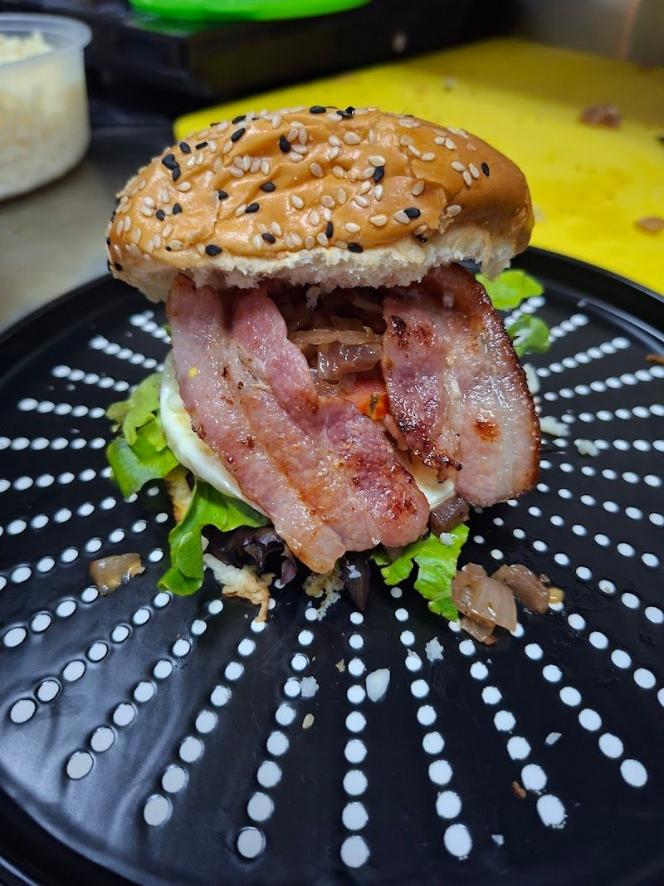
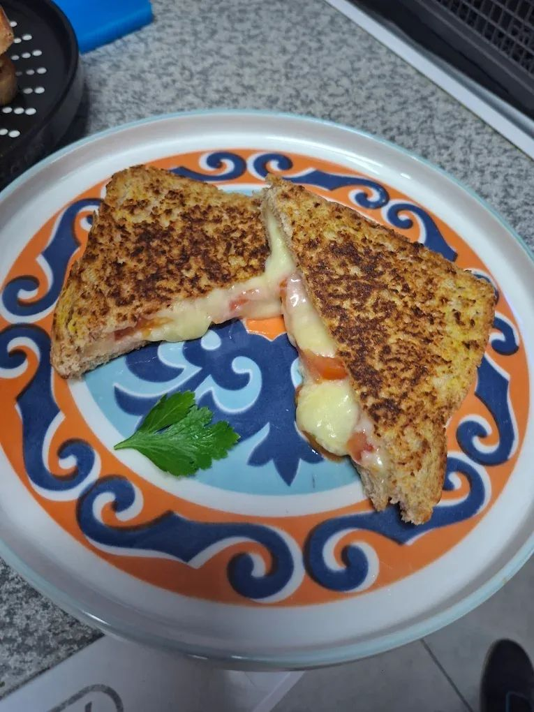
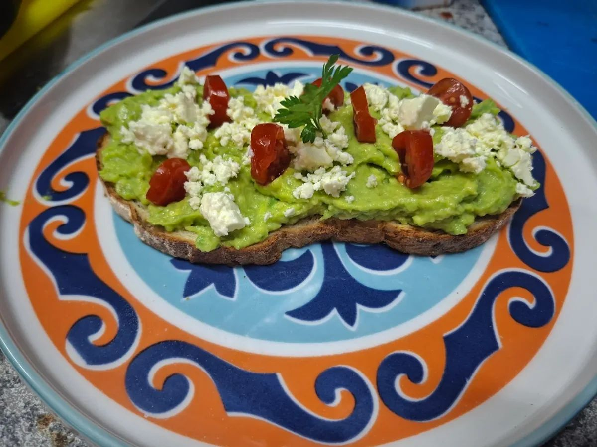

Our Products
Explore our delicious range of products, crafted with care to satisfy every taste. From hearty burgers to refreshing drinks, each item is made with the finest ingredients.

Burger
Our burgers are made with the freshest ingredients, offering a juicy and flavorful experience with each bite. Perfect for a quick, satisfying meal.

Toasted Cheese
Enjoy our toasted cheese sandwiches, featuring a perfect balance of melted cheese and crispy bread. A classic comfort food with a gourmet twist.

Refreshing Drinks
Quench your thirst with our selection of refreshing drinks, from expertly brewed coffees to invigorating smoothies and more.

Healthy Breakfast
Start your day with our healthy breakfast options, designed to provide energy and nutrition with delicious flavors.